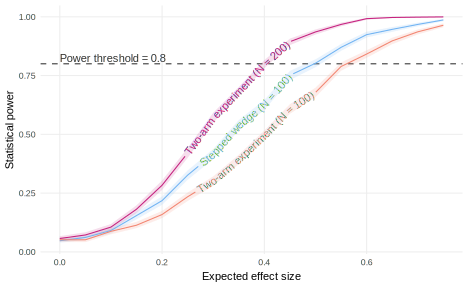

effect_size <- 0.35
declaration_18.10 <-
declare_model(
units = add_level(
N = 100,
U_unit = rnorm(N)
),
periods = add_level(
N = 3,
time = 1:max(periods),
U_time = rnorm(N),
nest = FALSE
),
unit_period = cross_levels(
by = join_using(units, periods),
U = rnorm(N),
potential_outcomes(
Y ~ scale(U_unit + U_time + time + U) + effect_size * Z
)
)
) +
declare_assignment(
wave = cluster_ra(clusters = units, conditions = 1:max(periods)),
Z = if_else(time >= wave, 1, 0)
) +
declare_inquiry(ATE = mean(Y_Z_1 - Y_Z_0), subset = time < max(time)) +
declare_measurement(Y = reveal_outcomes(Y ~ Z)) +
declare_estimator(Y ~ Z, fixed_effects = ~ periods + units,
clusters = units,
subset = time < max(time),
inquiry = "ATE", label = "TWFE") 38 Stepped-wedge experiments
We declare a stepped-wedge design in which units are assigned a sequence of treatments across multiple periods. In each period, one third are treated successively. Diagnosis of this design compared to similar-cost standard two-arm trials, and suggests that a double-sized two-arm trial is preferable in terms of power but that the stepped-wedge is useful when the number of study units is limited.
We often face an ethical dilemma in allocating treatments to some units but not others, since we would rather not withhold treatment from anyone. However, practical constraints often make it impossible to allocate treatments to everyone at the same time. In these circumstances, a stepped-wedge experiment, also known as a waitlist design, can help. Under a stepped-wedge design, we follow an allocation rule that randomly assigns a portion of units to treatment in each of one or more periods, and then in a final period, everyone is allocated treatment. We conduct posttreatment measurement after each period except for the last one. Figure 38.1 illustrates the allocation procedure. A common design is allocating one third to treatment in the first period, an additional third in the second period, and the remaining third in the final period.

Our model describes unit-specific effects, time-specific effects, and time trends in the potential outcomes. Our inquiry is the average treatment effect among time periods before the last period, since in the stepped-wedge design, we don’t obtain information about the control potential outcome in the final period. In the data strategy, the assign treatment by randomly assigning the wave each unit will receive treatment. We use cluster assignment at the unit level because the data is at the unit-period level. We then transform this treatment variable into a unit-period treatment indicator, if the time period is at or after the treatment wave. The answer strategy also only uses the data from the first two periods (we probably would not collect outcome data after the last period for this reason). We fit a two-way fixed effects regression model by periods and units with standard errors clustered at the unit level.
The stepped-wedge experimental design, described in Declaration 38.1, shares much in common with the observational difference-in-differences design. We show in Chapter 22, the two-way fixed effects estimator is biased for the average treatment effect on the treated in the presence of treatment effect by time interactions. However, in the stepped-wedge design, we randomize treatment, so we do not need to make a parallel trends assumption. Our diagnosis below shows no bias when estimating the average treatment effect with the two-way fixed effects estimator in the stepped-wedge design even when treatment effects vary by period. A regression with only period effects would also return unbiased answers as would a design with inverse assignment probability weights described in Gerber and Green (2012, ch. 8), but if there are large unit differences the two-way design will be more efficient. Only including unit fixed effects, by contrast, without period effects will yield biased answers, because the probabilities of assignment vary by round.
Declaration 38.1 Stepped-wedge design
38.1 When to use a stepped wedge experiment
Compared to the equivalent two-arm randomized experiment, a stepped-wedge experiment involves the same number of units, but more treatment (all versus half) and more measurement (all units are measured at least twice). The decision of whether to adopt the stepped-wedge design, then, rides on budget, the relative costs of measurement and treatment, ethical and logistical constraints such as the imperative to treat all units, and beliefs about effect sizes and outcome variances.
We compare the stepped-wedge design to a two-arm randomized experiment with varying sample sizes to assess these tradeoffs. First we compare designs with the same number of units, which would be the relevant comparison if the number of units is fixed. The second comparison is a two-arm experiment with double the number of units, which would be the right comparison if the number of units can be increased at some cost. We summarize each design in terms of the number of study units, the number that are treated, and the number of unit measurements taken.
| Design | N | m treated | n measurements |
|---|---|---|---|
| Stepped-wedge | 100 | 100 | 200 |
| Two-arm v1 | 100 | 50 | 100 |
| Two-arm v2 | 200 | 100 | 200 |
We declare a comparable two-arm experimental design in Declaration 38.2, with the wrinkle being that the estimand is slightly different by necessity. In the stepped-wedge design, we target the average treatment effect averaging over all periods up to the penultimate one, because there is no information about the control group from the last period. In a single period design, by its nature, we cannot average over time. We would obtain a biased answer if we targeted an out-of-sample time period. The average treatment effect we target is the current-period ATE for the period that is chosen. We cannot extrapolate beyond that if treatment effects vary over time. If we expect time heterogeneity in effects, we may not want to use a stepped-wedge design but instead design a new experiment that efficiently targets the conditional average treatment effects within each period. Then we could describe both the average effect and how effects vary over time.
Declaration 38.2 Comparison single-period two arm trial design
declaration_18.11 <-
declare_model(
N = n_units,
U_unit = rnorm(N),
U = rnorm(N),
effect_size = effect_size,
potential_outcomes(Y ~ scale(U_unit + U) + effect_size * Z)
) +
declare_assignment(Z = complete_ra(N, m = n_units / 2)) +
declare_inquiry(ATE = mean(Y_Z_1 - Y_Z_0)) +
declare_measurement(Y = reveal_outcomes(Y ~ Z)) +
declare_estimator(Y ~ Z, inquiry = "ATE", label = "DIM")Diagnosis 38.1 Diagnosis of stepped-wedge design compared to two single-period two arm trial designs
design_stepped_wedge <-
declaration_18.11 |>
redesign(n_units = 100, effect_size = seq(from = 0, to = 0.75, by = 0.05))
design_single_period_100 <-
declaration_18.11 |>
redesign(n_units = 100, effect_size = seq(from = 0, to = 0.75, by = 0.05))
design_single_period_200 <-
declaration_18.11 |>
redesign(n_units = 200, effect_size = seq(from = 0, to = 0.75, by = 0.05))
designs <- c(design_stepped_wedge, design_single_period_100, design_single_period_200)
attr(designs, "names") <- paste0("design_", 1:length(designs))
diagnosis_18.11 <- diagnose_design(designs)We plot power curves for the three comparison designs in Figure 38.2. The top line (blue dashed) is the 200-unit study, which is preferred in terms of power, and by a considerable margin. That design involves the same amount of measurement and treatment as the stepped-wedge so may be the same cost. However, if only 100 units are available for study, then the relevant comparison is between the stepped-wedge and the 100-unit two arm study. Here, the stepped-wedge design is preferable in terms of power and may satisfy ethical requirements to eventually treat all subjects.

38.2 Design examples
Gerber et al. (2011) use a stepped-wedge design to randomize the timing of political television ads in 18 media markets in Texas in advance of a primary election.
Pennycook et al. (2021) conduct an online field experiment with Twitter users who had shared links to untrustworthy websites. The authors randomized the timing of a direct messages to those users, asking them to rate the accuracy of a non-political headline, then observed the quality of the news articles they subsequently shared.